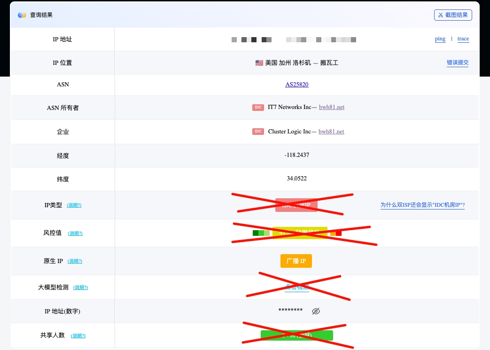

ジャンボ蜜柑
@JanboMikan
最近确实好多人号被冻结，人心惶惶的。
我也觉得IP问题比较大，而机场IP质量良莠不齐。
大家都用ping0看，但实际上业内都知道这家基本就是个娱乐库。
ping0绿标但实际fraud score很高的机场IP其实很多，之前发现一位朋友就是。
也从MJJ角度简单分享一下IP质量真正要怎么看吧。

奶怡喵喵咪
@Gicrain
紧急通知：推特近期出现了大规模封号，请各位宝宝们注意保护好自己账号哦。
下面是已知的被封号的行为：
1.头像如果出现色情内容，会被平台冻结。平台规则中写有禁止色情头像。
2.横幅（头像上方图片）出现色情内容，会被平台冻结。平台规则中写有禁止色情横幅。